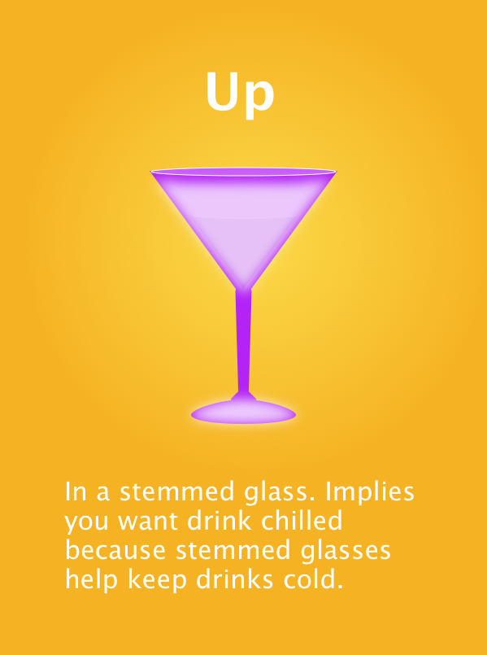
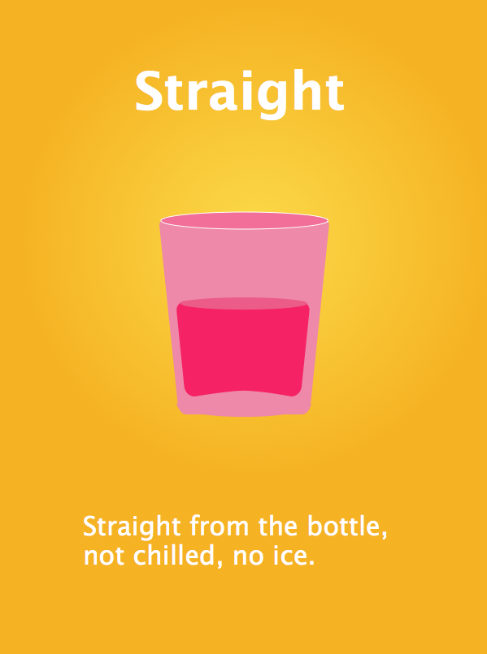
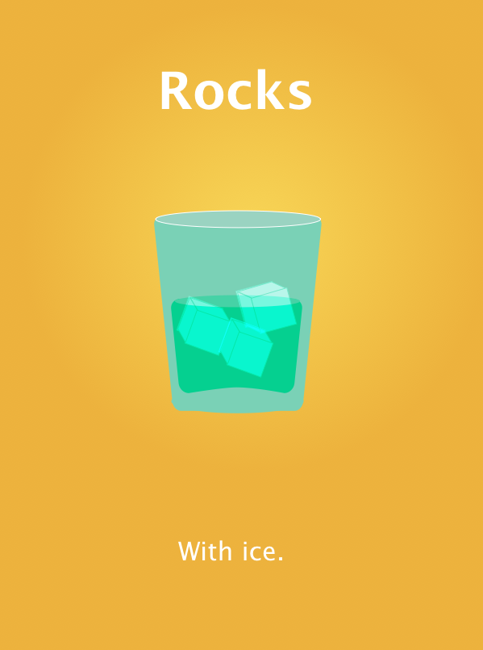
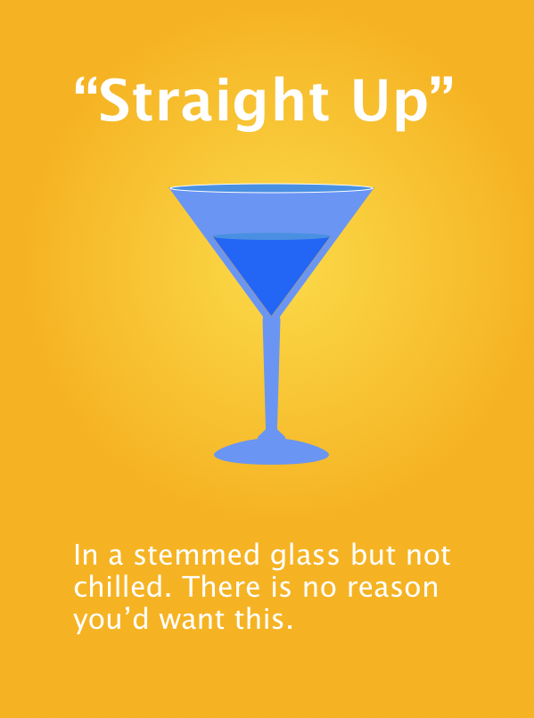

Sat Jan 30, 2016
If you like me grew up watching TV and movie characters sidle up to a bar and order a drink "straight up", you might have been tempted to copy them when you finally came of drinking age. Here's a little guide to make sure you get what you want.
   {kind=link}
{kind=link}
{kind=link}
{kind=link}


Wed Jan 27, 2016
The Incans of Peru had no known written language yet kept excellent records about every bit of their lives. Without a language to write in what did they use? Color and shape.
By twisting and knotting strands of dyed rope they told stories of what cattle the owned, their family trees, and details of their personal finances. These ropes-turned-data visualizations are called quipus.
They sound quaint but have survived longer than our diaries or electronic spreadsheets ever will, and have satisfied many an anthropologist's yearning for details on Incan daily life.


Tue Jan 26, 2016
Want to describe your coffee like a pro? You're in luck! The Specialty Coffee Association of America updated it's Coffee Taster's Flavor Wheel for the first time since the original in 1998, and it probably has the word you're looking for.
It goes well beyond the basics of sweet, sour, bitter and salty, inviting you to describe coffee as papery, vegatative, smoky or caramelized.
The colors in the new wheel convey the warmth or coolness, brightness or earthiness of the flavors, while the negative space allows the graphic to breathe, especially where it thins out the outer ring. Good improvements to the comparatively compact original (below).
Now let's see...One half-caff papery latte with a lime aftertaste, please!
{kind=link}
{kind=link}
Wed Jan 20, 2016
As covered in an earlier post, there is reason to believe our ancestors saw the world much differently than we do, and it might be because they didn't have all the words for colors that we have today. Even more exciting, this phenomenon might be still be going on.
The Himba tribe in Namibia don't have a word for blue, but instead have a word that covers medium-dark colors including blue, maroon and some dark greens. In addition, they have many others words for green, targeting all sorts of shades, tints and hues.
In 2005, Oxford scientists tested if this difference in language caused the Himba people to actually see colors differently than English-speakers do. They asked the Himba volunteers to pick out a blue square displayed on a monitor among green ones. Sounds easy enough, but they struggled with it and some couldn't do it at all. Then the experimenters showed the same volunteers all green squares with one only slightly different from the others. The Himba had no trouble picking out the different green, a task Westerners find difficult.
These findings support the Lingustic Relativity theory, which says that language influences the speaker's world view or cognition. While not air-tight proof that language influences color perception, I for one am inspired to learn more names for green.
Tue Jan 19, 2016
Dear St. Louis,
Please don't worry about losing your football team to Los Angeles. Many of the finest cities in the world don't have football teams, and now you are among them.
A lot of people don't even like football. This is your chance to mingle with them. Throw a literary festival! Become a tech hub! Have a graffiti competition! Who knows who you'll meet and what you'll start talking about?
I know it feels bleak now, St. Louis, but you have new friends waiting to meet you. And they will come, not in spite of, but because you are a football-free city.
Sincerely,
A potential new friend
Mon Jan 18, 2016
Back in school, if you had to read The Iliad you might have overlooked some odd passages regarding the colors of things: where it says the sky is bronze, the sea is the color of wine, and sheep are violet. Something got lost in translation, right?
Not necessarily. Most ancient texts, including the New Testament, use colors in ways you and I never would. Why is that? It could be that different cultures actually see colors differently, depending on if there is a word for a particular color in that language. If your brain doesn't have a word for, say, blue - like the ancients didn't - it won't detect blue and substitute a color for which it does have a word.
Sounds outlandish but convincing evidence was videoed in the Himba Color Experment. A tribe in Namibia has no word for blue but several for green and the Himba volunteers couldn't pick out a blue swatch among a bunch of green swatches.
It's not conclusive but very tempting. I mean, who wouldn't want to live in a word with violet sheep?